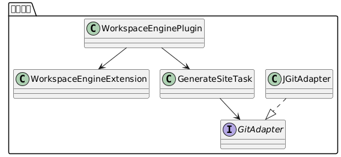
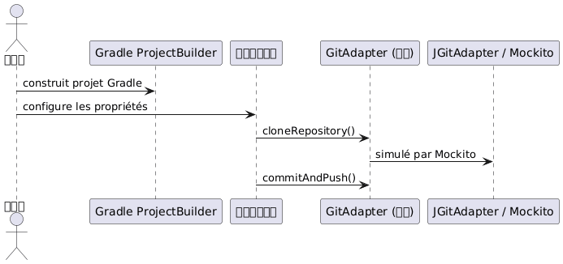

使用 JBake 和 JGit 的可配置 Kotlin Gradle 插件的 TDD
Publié le 09 July 2025
Sommaire
本文介绍了用 Kotlin DSL 编写的 Gradle 插件的完整设计和测试（TDD）流程。该插件通过 JBake 自动生成静态站点，并通过 JGit 实现 Git 部署，所有这些均基于一个 YAML 配置文件。
目标
创建 Gradle 插件：
-
可在 Kotlin DSL 中配置；
-
能够：
-
使用 JBake 生成静态网站；
-
通过 JGit 部署到远程 Git 仓库 ;
-
可集成到 CI/CD 工作流中；
-
采用 TDD 方法进行测试。
声明式配置
这是一个YAML配置的示例，需要在我们的DSL中进行建模：
bake:
srcPath: "./site/jbake"
destDirPath: "bake"
pushPage:
from: "bake"
to: "cvs"
repo:
name: "trainings"
repository: "https://github.com/pages-content/trainings.git"
credentials:
username: "USERNAME"
password: "SECRET_TOKEN"
branch: "main"
message: "cheroliv.com"此配置通过可在 Kotlin DSL 中声明的 Gradle 扩展表示。
�插件架构

DSL 扩展的定义
open class WorkspaceEngineExtension {
var outputDir: String = "build/site"
var template: String = "freemarker"
var repoUrl: String = ""
var branch: String = "main"
var message: String = "Generated by engine"
}自定义任务的定义
abstract class GenerateSiteTask : DefaultTask() {
lateinit var gitAdapter: GitAdapter
@get:Input abstract val repoUrl: Property<String>
@get:InputDirectory abstract val outputDir: DirectoryProperty
@get:Input abstract val branch: Property<String>
@get:Input abstract val message: Property<String>
@TaskAction
fun run() {
val repo = gitAdapter.cloneRepository(repoUrl.get(), outputDir.get().asFile)
gitAdapter.commitAndPush(repo, branch.get(), message.get())
}
}接口 GitAdapter
interface GitAdapter {
fun cloneRepository(uri: String, directory: File): Repository
fun commitAndPush(repo: Repository, branch: String, message: String)
}使用 JGit 的具体实现
class JGitAdapter : GitAdapter {
override fun cloneRepository(uri: String, directory: File): Repository {
return Git.cloneRepository()
.setURI(uri)
.setDirectory(directory)
.call()
.repository
}
override fun commitAndPush(repo: Repository, branch: String, message: String) {
Git(repo).use {
it.add().addFilepattern(".").call()
it.commit().setMessage(message).call()
it.push().call()
}
}
}配置 DSL Kotlin
workspaceEngine {
outputDir = "build/out"
template = "freemarker"
repoUrl = "https://github.com/cheroliv/trainings.git"
branch = "main"
message = "deploy from plugin"
}使用 Mockito 进行单元测试
依赖
testImplementation("org.mockito:mockito-core:5.12.0")
testImplementation("org.mockito.kotlin:mockito-kotlin:5.2.1")
testImplementation("org.junit.jupiter:junit-jupiter:5.10.0")Git行为测试
class GenerateSiteTaskMockitoTest {
@TempDir
lateinit var tempDir: File
@Test
fun `task should call clone and commitAndPush`() {
val project = ProjectBuilder.builder().build()
val task = project.tasks.create("generateSite", GenerateSiteTask::class.java)
val mockGitAdapter = mock<GitAdapter>()
val mockRepo = mock<Repository>()
whenever(mockGitAdapter.cloneRepository(any(), any())).thenReturn(mockRepo)
task.gitAdapter = mockGitAdapter
task.repoUrl.set("https://github.com/cheroliv/test.git")
task.outputDir.set(project.layout.projectDirectory.dir(tempDir.name))
task.branch.set("main")
task.message.set("test commit")
task.run()
verify(mockGitAdapter).cloneRepository(eq("https://github.com/cheroliv/test.git"), any())
verify(mockGitAdapter).commitAndPush(eq(mockRepo), eq("main"), eq("test commit"))
}
}
结论
通过责任分离`GitAdapter`可以在 Gradle 插件开发中充分应用 TDD :
-
Git 调用被抽象且可测试 ;
-
DSL 配置干净且清晰；
-
该插件对实际实现保持不可知。
这种方法确保了高可测性和可扩展性（适用于 GitHub API、GitLab 等）。
下一步
-
集成 JBake 生成作为一个`BakeAdapter`
-
添加集成测试`GradleRunner`
-
支持自动加载文件`site.yml`通过 SnakeYAML